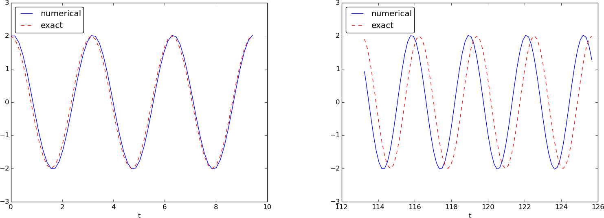
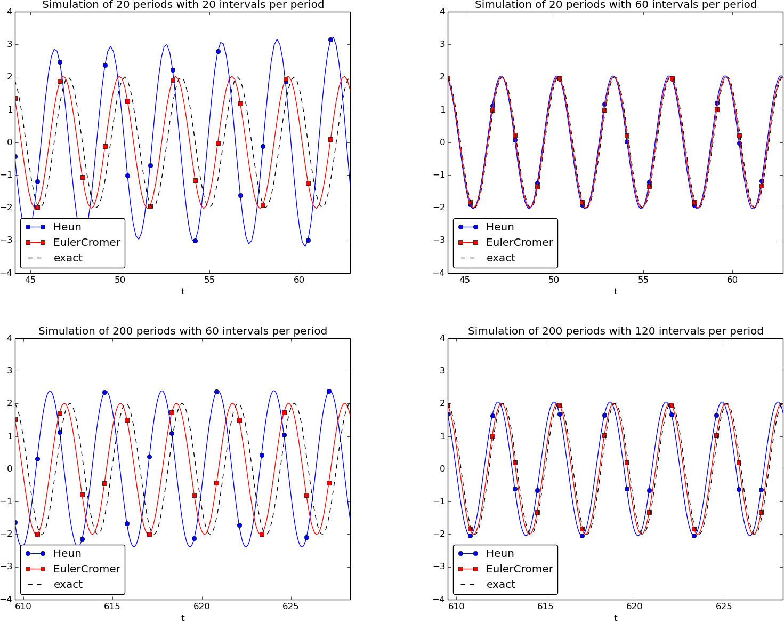
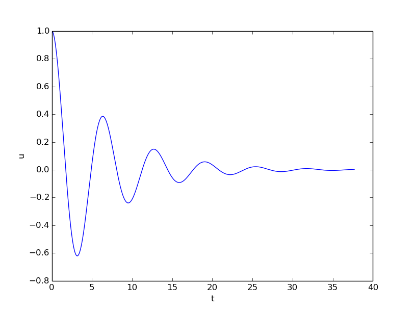
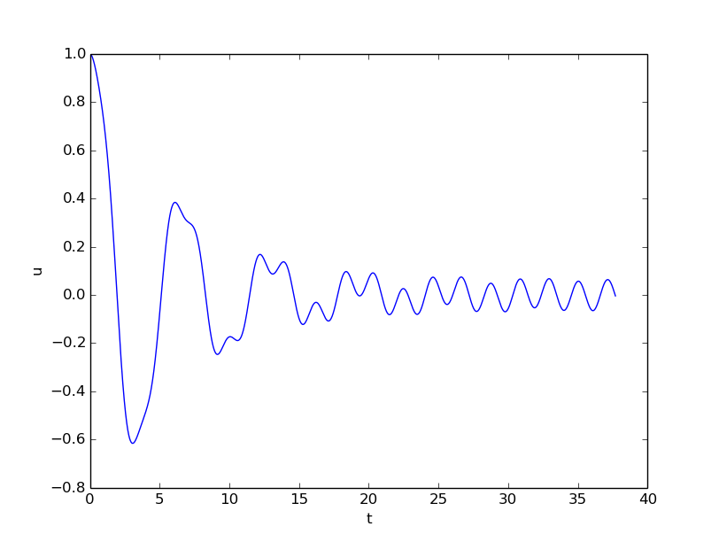
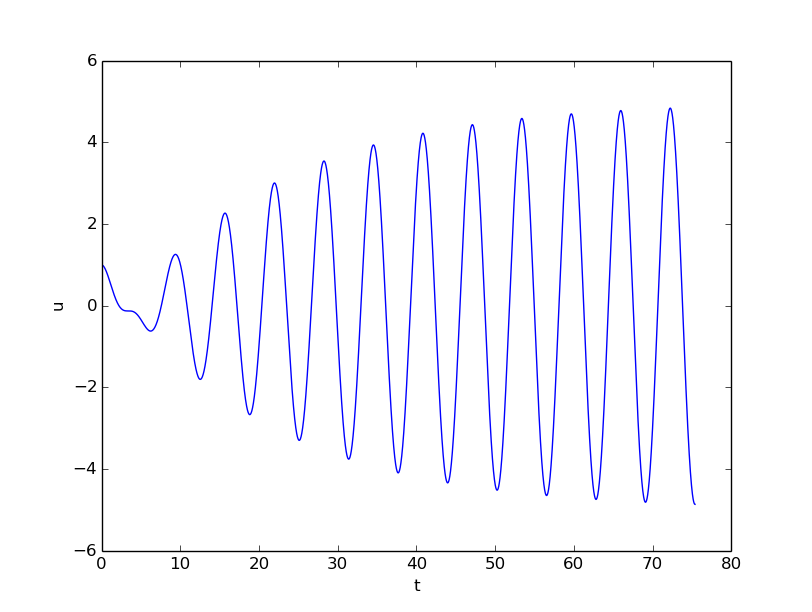
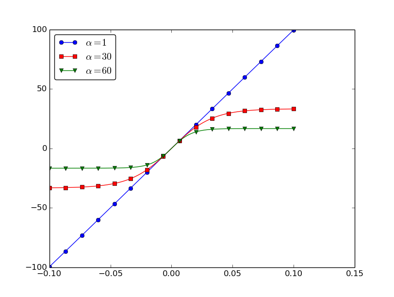

Oscillating one-dimensional systems
Numerous engineering constructions and devices contain materials that act like springs. Such springs give rise to oscillations, and controlling oscillations is a key engineering task. We shall now learn to simulate oscillating systems.
As always, we start with the simplest meaningful mathematical model, which for oscillations is a second-order differential equation: $$ \begin{equation} u''(t) + \omega^2 u(t) = 0, \tag{4.40} \end{equation} $$ where \( \omega \) is a given physical parameter. Equation (4.40) models a one-dimensional system oscillating without damping (i.e., with negligible damping). One-dimensional here means that some motion takes place along one dimension only in some coordinate system. Along with (4.40) we need the two initial conditions \( u(0) \) and \( u'(0) \).
Derivation of a simple model
Figure 34: Sketch of a one-dimensional, oscillating dynamic system (without friction).

Many engineering systems undergo oscillations, and differential equations constitute the key tool to understand, predict, and control the oscillations. We start with the simplest possible model that captures the essential dynamics of an oscillating system. Some body with mass \( m \) is attached to a spring and moves along a line without friction, see Figure 34 for a sketch (rolling wheels indicate "no friction"). When the spring is stretched (or compressed), the spring force pulls (or pushes) the body back and work "against" the motion. More precisely, let \( x(t) \) be the position of the body on the \( x \) axis, along which the body moves. The spring is not stretched when \( x=0 \), so the force is zero, and \( x=0 \) is hence the equilibrium position of the body. The spring force is \( -kx \), where \( k \) is a constant to be measured. We assume that there are no other forces (e.g., no friction). Newton's 2nd law of motion \( F=ma \) then has \( F=-kx \) and \( a=\ddot x \), $$ \begin{equation} -kx = m\ddot x, \tag{4.41} \end{equation} $$ which can be rewritten as $$ \begin{equation} \ddot x + \omega^2x = 0, \tag{4.42} \end{equation} $$ by introducing \( \omega = \sqrt{k/m} \) (which is very common).
Equation (4.42) is a second-order differential equation, and therefore we need two initial conditions, one on the position \( x(0) \) and one on the velocity \( x'(0) \). Here we choose the body to be at rest, but moved away from its equilibrium position: $$ x(0)=X_0,\quad x'(0)=0\thinspace . $$ The exact solution of (4.42) with these initial conditions is \( x(t)=X_0\cos\omega t \). This can easily be verified by substituting into (4.42) and checking the initial conditions. The solution tells that such a spring-mass system oscillates back and forth as described by a cosine curve.
The differential equation (4.42) appears in numerous other contexts. A classical example is a simple pendulum that oscillates back and forth. Physics books derive, from Newton's second law of motion, that $$ mL\theta'' + mg\sin \theta = 0,$$ where \( m \) is the mass of the body at the end of a pendulum with length \( L \), \( g \) is the acceleration of gravity, and \( \theta \) is the angle the pendulum makes with the vertical. Considering small angles \( \theta \), \( \sin \theta\approx \theta \), and we get (4.42) with \( x=\theta \), \( \omega = \sqrt{g/L} \), \( x(0)=\Theta \), and \( x'(0)=0 \), if \( \Theta \) is the initial angle and the pendulum is at rest at \( t=0 \).
Numerical solution
We have not looked at numerical methods for handling second-order derivatives, and such methods are an option, but we know how to solve first-order differential equations and even systems of first-order equations. With a little, yet very common, trick we can rewrite (4.42) as a first-order system of two differential equations. We introduce \( u=x \) and \( v=x'=u' \) as two new unknown functions. The two corresponding equations arise from the definition \( v=u' \) and the original equation (4.42): $$ \begin{align} u' &= v, \tag{4.43} \\ v' &= -\omega^2 u\thinspace . \tag{4.44} \end{align} $$ (Notice that we can use \( u''=v' \) to remove the second-order derivative from Newton's 2nd law.)
We can now apply the Forward Euler method to (4.43)-(4.44), exactly as we did in the section A Forward Euler method for the differential equation system: $$ \begin{align} \frac{u^{n+1}-u^n}{\Delta t} &= v^n, \tag{4.45} \\ \frac{v^{n+1}-v^n}{\Delta t} &= -\omega^2 u^n, \tag{4.46} \end{align} $$ resulting in the computational scheme $$ \begin{align} u^{n+1} &= u^n + \Delta t\,v^n, \tag{4.47} \\ v^{n+1} &= v^n -\Delta t\,\omega^2 u^n\thinspace . \tag{4.48} \end{align} $$
Programming the numerical method; the special case
A simple program for (4.47)-(4.48) follows the same ideas as in the section Programming the numerical method; the special case:
omega = 2;
P = 2*pi/omega;
dt = P/20;
T = 3*P;
N_t = floor(T/dt);
t = linspace(0, N_t*dt, N_t+1);
u = zeros(N_t+1, 1);
v = zeros(N_t+1, 1);
% Initial condition
X_0 = 2;
u(1) = X_0;
v(1) = 0;
% Step equations forward in time
for n = 1:N_t
u(n+1) = u(n) + dt*v(n);
v(n+1) = v(n) - dt*omega^2*u(n);
end
plot(t, u, 'b-', t, X_0*cos(omega*t), 'r--');
legend('numerical', 'exact', 'Location','northwest');
xlabel('t');
print('tmp', '-dpdf'); print('tmp', '-dpng');
(See file osc_FE_special_case.m.)
Since we already know the exact solution as \( u(t)=X_0\cos\omega t \), we have reasoned as follows to find an appropriate simulation interval \( [0,T] \) and also how many points we should choose. The solution has a period \( P=2\pi/\omega \). (The period \( P \) is the time difference between two peaks of the \( u(t)\sim\cos\omega t \) curve.) Simulating for three periods of the cosine function, \( T=3P \), and choosing \( \Delta t \) such that there are 20 intervals per period gives \( \Delta t=P/20 \) and a total of \( N_t=T/\Delta t \) intervals. The rest of the program is a straightforward coding of the Forward Euler scheme.
Figure 35 shows a comparison between the numerical solution and the exact solution of the differential equation. To our surprise, the numerical solution looks wrong. Is this discrepancy due to a programming error or a problem with the Forward Euler method?
Figure 35: Simulation of an oscillating system.

First of all, even before trying to run the program, you should sit down and compute two steps in the time loop with a calculator so you have some intermediate results to compare with. Using \( X_0=2 \), \( dt=0.157079632679 \), and \( \omega=2 \), we get \( u^1=2 \), \( v^1=-1.25663706 \), \( u^2=1.80260791 \), and \( v^2=-2.51327412 \). Such calculations show that the program is seemingly correct. (Later, we can use such values to construct a unit test and a corresponding test function.)
The next step is to reduce the discretization parameter \( \Delta t \) and see if the results become more accurate. Figure 36 shows the numerical and exact solution for the cases \( \Delta t = P/40, P/160, P/2000 \). The results clearly become better, and the finest resolution gives graphs that cannot be visually distinguished. Nevertheless, the finest resolution involves 6000 computational intervals in total, which is considered quite much. This is no problem on a modern laptop, however, as the computations take just a fraction of a second.
Figure 36: Simulation of an oscillating system with different time steps. Upper left: 40 steps per oscillation period. Upper right: 160 steps per period. Lower left: 2000 steps per period. Lower right: 2000 steps per period, but longer simulation.

Although 2000 intervals per oscillation period seem sufficient for an accurate numerical solution, the lower right graph in Figure 36 shows that if we increase the simulation time, here to 20 periods, there is a little growth of the amplitude, which becomes significant over time. The conclusion is that the Forward Euler method has a fundamental problem with its growing amplitudes, and that a very small \( \Delta t \) is required to achieve satisfactory results. The longer the simulation is, the smaller \( \Delta t \) has to be. It is certainly time to look for more effective numerical methods!
A magic fix of the numerical method
In the Forward Euler scheme, $$ \begin{align*} u^{n+1} &= u^n + \Delta t\,v^n,\\ v^{n+1} &= v^n -\Delta t\,\omega^2 u^n, \end{align*} $$ we can replace \( u^n \) in the last equation by the recently computed value \( u^{n+1} \) from the first equation: $$ \begin{align} u^{n+1} &= u^n + \Delta t\,v^n, \tag{4.49} \\ v^{n+1} &= v^n -\Delta t\,\omega^2 u^{n+1}\thinspace . \tag{4.50} \end{align} $$
Before justifying this fix more mathematically, let us try it on the previous example. The results appear in Figure 37. We see that the amplitude does not grow, but the phase is not entirely correct. After 40 periods (Figure 37 right) we see a significant difference between the numerical and the exact solution. Decreasing \( \Delta t \) decreases the error. For example, with 2000 intervals per period, we only see a small phase error even after 50,000 periods (!). We can safely conclude that the fix results in an excellent numerical method!
Figure 37: Adjusted method: first three periods (left) and period 36-40 (right).

Let us interpret the adjusted scheme mathematically. First we order (4.49)-(4.50) such that the difference approximations to derivatives become transparent: $$ \begin{align} \frac{u^{n+1} - u^n}{\Delta t} &= v^n, \tag{4.51} \\ \frac{v^{n+1} - v^n}{\Delta t} &= -\omega^2 u^{n+1}\thinspace . \tag{4.52} \end{align} $$ We interpret (4.51) as the differential equation sampled at mesh point \( t_n \), because we have \( v^n \) on the right-hand side. The left-hand side is then a forward difference or Forward Euler approximation to the derivative \( u' \), see Figure 21. On the other hand, we interpret (4.52) as the differential equation sampled at mesh point \( t_{n+1} \), since we have \( u^{n+1} \) on the right-hand side. In this case, the difference approximation on the left-hand side is a backward difference, $$ v'(t_{n+1}) \approx \frac{v^{n+1} - v^n}{\Delta t}\quad\hbox{ or }\quad v'(t_{n}) \approx \frac{v^{n} - v^{n-1}}{\Delta t}\thinspace . $$ Figure 38 illustrates the backward difference. The error in the backward difference is proportional to \( \Delta t \), the same as for the forward difference (but the proportionality constant in the error term has different sign). The resulting discretization method for (4.52) is often referred to as a Backward Euler scheme.
Figure 38: Illustration of a backward difference approximation to the derivative.

To summarize, using a forward difference for the first equation and a backward difference for the second equation results in a much better method than just using forward differences in both equations.
The standard way of expressing this scheme in physics is to
change the order of the equations,
$$
\begin{align}
v' &= -\omega^2 u,
\tag{4.53}\\
u' &= v,
\tag{4.54}
\end{align}
$$
and apply a forward difference to (4.53)
and a backward difference to (4.54):
$$
\begin{align}
v^{n+1} &= v^n -\Delta t\,\omega^2 u^{n},
\tag{4.55}\\
u^{n+1} &= u^n + \Delta t\,v^{n+1}\thinspace .
\tag{4.56}
\end{align}
$$
That is, first the velocity \( v \) is updated and then the position \( u \),
using the most recently computed velocity.
There is no difference between
(4.55)-(4.56)
and
(4.49)-(4.50)
with respect to accuracy, so the order of the original differential
equations does not matter.
The scheme (4.55)-(4.56)
goes under the names Semi-implicit Euler or Euler-Cromer.
The implementation of
(4.55)-(4.56)
is found in the file osc_EC.m. The core of the code goes like
u = zeros(N_t+1,1);
v = zeros(N_t+1,1);
% Initial condition
u(1) = 2;
v(1) = 0;
% Step equations forward in time
for n = 1:N_t
v(n+1) = v(n) - dt*omega^2*u(n);
u(n+1) = u(n) + dt*v(n+1);
end
The 2nd-order Runge-Kutta method (or Heun's method)
A very popular method for solving scalar and vector ODEs of first order is the 2nd-order Runge-Kutta method (RK2), also known as Heun's method. The idea, first thinking of a scalar ODE, is to form a centered difference approximation to the derivative between two time points: $$ u'(t_n+\frac{1}{2}\Delta t)\approx \frac{u^{n+1}-u^n}{\Delta t}\thinspace .$$ The centered difference formula is visualized in Figure 39. The error in the centered difference is proportional to \( \Delta t^2 \), one order higher than the forward and backward differences, which means that if we halve \( \Delta t \), the error is more effectively reduced in the centered difference since it is reduced by a factor of four rather than two.
Figure 39: Illustration of a centered difference approximation to the derivative.

The problem with such a centered scheme for the general ODE \( u'=f(u,t) \) is that we get $$ \frac{u^{n+1}-u^n}{\Delta t} = f(u^{n+\frac{1}{2}},t_{n+\frac{1}{2}}),$$ which leads to difficulties since we do not know what \( u^{n+\frac{1}{2}} \) is. However, we can approximate the value of \( f \) between two time levels by the arithmetic average of the values at \( t_n \) and \( t_{n+1} \): $$ f(u^{n+\frac{1}{2}},t_{n+\frac{1}{2}}) \approx \frac{1}{2}(f(u^n, t_n) + f(u^{n+1}, t_{n+1}))\thinspace .$$ This results in $$ \frac{u^{n+1}-u^n}{\Delta t} = \frac{1}{2}(f(u^n, t_n) + f(u^{n+1}, t_{n+1})),$$ which in general is a nonlinear algebraic equation for \( u^{n+1} \) if \( f(u,t) \) is not a linear function of \( u \). To deal with the unknown term \( f(u^{n+1}, t_{n+1}) \), without solving nonlinear equations, we can approximate or predict \( u^{n+1} \) using a Forward Euler step: $$ u^{n+1} = u^n + \Delta tf(u^n,t_n)\thinspace .$$ This reasoning gives rise to the method $$ \begin{align} u^* &= u^n + \Delta tf(u^n,t_n), \tag{4.57}\\ u^{n+1} &= u^n + \frac{\Delta t}{2}( f(u^n,t_n) + f(u^{*},t_{n+1})\thinspace . \tag{4.58} \end{align} $$ The scheme applies to both scalar and vector ODEs.
For an oscillating system with \( f=(v,-\omega^2u) \) the file
osc_Heun.m implements this method.
The demo script demo_osc_Heun.m runs the simulation for 10 periods
with 20 time steps per period.
The corresponding numerical and exact solutions are shown
in Figure 40. We see that the amplitude grows,
but not as much as for the Forward Euler method. However, the
Euler-Cromer method is much better!
Figure 40: Simulation of 10 periods of oscillations by Heun's method.

We should add that in problems where the Forward Euler method gives satisfactory approximations, such as growth/decay problems or the SIR model, the 2nd-order Runge-Kutta method or Heun's method, usually works considerably better and produces greater accuracy for the same computational cost. It is therefore a very valuable method to be aware of, although it cannot compete with the Euler-Cromer scheme for oscillation problems. The derivation of the RK2/Heun scheme is also good general training in "numerical thinking".
Software for solving ODEs
Matlab and Octave users have a handful of functions for solving ODEs, e.g.
the popular methods ode45 and ode23s. To illustrate, we may use
ode45 to solve the simple problem \( u'=u \), \( u(0)=2 \), for 100 time steps until \( t=4 \):
u0 = 2; % initial condition
time_points = linspace(0, 4, 101);
[t, u] = ode45(@exp_dudt, time_points, u0);
plot(t, u);
xlabel('t'); ylabel('u');
Here, ode45 is called with three parameters. The first one, @exp_dudt, is
a handle to a function that specifies the right hand side of the ODE, i.e., f(u, t). In the present example,
it reads
function dudt = exp_dudt(t, u)
dudt = u
The second parameter, time_points, is an array that gives the time points on the interval
where we want the solution to be reported. Alternatively, this second parameter could
have been given as [0 4], which just specifies the interval, giving no directions
to Matlab as to where (on the interval) the solution should be found. The third parameter, u0,
just states the initial condition.
Other ODE solvers in Matlab work in a similar fashion. Several ODEs may also be solved with one function call and parameters may be included.
There is a jungle of methods for solving ODEs, and it would be nice to
have easy access to implementations of a wide range of methods,
especially the sophisticated
and complicated adaptive methods
(like ode45 and ode23s above)
that adjusts \( \Delta t \) automatically
to obtain a prescribed accuracy. The Python package
Odespy gives easy access to a lot
of numerical methods for ODEs.
The simplest possible example on using Odespy is to solve the same problem that we just looked at, i.e., \( u'=u \), \( u(0)=2 \), for 100 time steps until \( t=4 \):
import odespy
def f(u, t):
return u
method = odespy.Heun # or, e.g., odespy.ForwardEuler
solver = method(f)
solver.set_initial_condition(2)
time_points = np.linspace(0, 4, 101)
u, t = solver.solve(time_points)
In other words, you define your right-hand side function f(u, t),
initialize an Odespy solver object, set the initial condition,
compute a collection of time points where you want the solution,
and ask for the solution. The returned arrays u and t can be
plotted directly: plot(t, u).
A nice feature of Odespy is that problem parameters can be
arguments to the user's f(u, t) function. For example,
if our ODE problem is \( u'=-au+b \), with two problem parameters
\( a \) and \( b \), we may write our f function as
def f(u, t, a, b):
return -a*u + b
The extra, problem-dependent arguments a and b can be transferred
to this function
if we collect their values in a list or tuple
when creating the Odespy solver and use the f_args argument:
a = 2
b = 1
solver = method(f, f_args=[a, b])
This is a good feature because problem parameters must otherwise be global variables - now they can be arguments in our right-hand side function in a natural way. Exercise 58: Use Odespy to solve a simple ODE asks you to make a complete implementation of this problem and plot the solution.
Using Odespy to solve oscillation ODEs like \( u''+\omega^2u=0 \),
reformulated as a system \( u'=v \) and \( v'=-\omega^2u \), is done
as follows. We specify
a given number of time steps per period and compute the
associated time steps and end time of the simulation (T),
given a number of periods to simulate:
import odespy
# Define the ODE system
# u' = v
# v' = -omega**2*u
def f(sol, t, omega=2):
u, v = sol
return [v, -omega**2*u]
# Set and compute problem dependent parameters
omega = 2
X_0 = 1
number_of_periods = 40
time_intervals_per_period = 20
from numpy import pi, linspace, cos
P = 2*pi/omega # length of one period
dt = P/time_intervals_per_period # time step
T = number_of_periods*P # final simulation time
# Create Odespy solver object
odespy_method = odespy.RK2
solver = odespy_method(f, f_args=[omega])
# The initial condition for the system is collected in a list
solver.set_initial_condition([X_0, 0])
# Compute the desired time points where we want the solution
N_t = int(round(T/dt)) # no of time intervals
time_points = linspace(0, T, N_t+1)
# Solve the ODE problem
sol, t = solver.solve(time_points)
# Note: sol contains both displacement and velocity
# Extract original variables
u = sol[:,0]
v = sol[:,1]
The last two statements are important since our two functions \( u \) and \( v \)
in the ODE system are packed together in one array inside the Odespy solver.
The solution of the ODE system
is returned as a two-dimensional array where the first
column (sol[:,0]) stores \( u \) and the second (sol[:,1]) stores \( v \).
Plotting \( u \) and \( v \) is a matter of running plot(t, u, t, v).
f(sol, t, omega) instead
of f(u, t, omega) to indicate that the solution sent to f
is a solution at time t where the values of \( u \) and \( v \) are
packed together: sol = [u, v]. We might well use u as argument:
def f(u, t, omega=2):
u, v = u
return [v, -omega**2*u]
This just means that we redefine the name u inside the function
to mean the solution at time t for the first component of
the ODE system.
To switch to another numerical method, just substitute RK2 by
the proper name of the desired method.
Typing pydoc odespy in the terminal window brings up a list
of all the implemented methods.
This very simple way of choosing a method suggests an obvious extension
of the code above: we can define a list of methods, run all
methods, and compare their \( u \) curves in a plot.
As Odespy also contains the Euler-Cromer scheme, we rewrite
the system with \( v'=-\omega^2u \) as the first ODE and \( u'=v \)
as the second ODE, because this is the standard choice when
using the Euler-Cromer method (also in Odespy):
def f(u, t, omega=2):
v, u = u
return [-omega**2*u, v]
This change of equations also affects the initial condition:
the first component is zero and second is X_0 so we need
to pass the list [0, X_0] to solver.set_initial_condition.
The code ode_odespy.py contains the details:
def compare(odespy_methods,
omega,
X_0,
number_of_periods,
time_intervals_per_period=20):
from numpy import pi, linspace, cos
P = 2*pi/omega # length of one period
dt = P/time_intervals_per_period
T = number_of_periods*P
# If odespy_methods is not a list, but just the name of
# a single Odespy solver, we wrap that name in a list
# so we always have odespy_methods as a list
if type(odespy_methods) != type([]):
odespy_methods = [odespy_methods]
# Make a list of solver objects
solvers = [method(f, f_args=[omega]) for method in
odespy_methods]
for solver in solvers:
solver.set_initial_condition([0, X_0])
# Compute the time points where we want the solution
dt = float(dt) # avoid integer division
N_t = int(round(T/dt))
time_points = linspace(0, N_t*dt, N_t+1)
legends = []
for solver in solvers:
sol, t = solver.solve(time_points)
v = sol[:,0]
u = sol[:,1]
# Plot only the last p periods
p = 6
m = p*time_intervals_per_period # no time steps to plot
plot(t[-m:], u[-m:])
hold('on')
legends.append(solver.name())
xlabel('t')
# Plot exact solution too
plot(t[-m:], X_0*cos(omega*t)[-m:], 'k--')
legends.append('exact')
legend(legends, loc='lower left')
axis([t[-m], t[-1], -2*X_0, 2*X_0])
title('Simulation of %d periods with %d intervals per period'
% (number_of_periods, time_intervals_per_period))
savefig('tmp.pdf'); savefig('tmp.png')
show()
A new feature in this code is the ability to plot only the last p
periods, which allows us to perform long time simulations and
watch the end results without a cluttered plot with too many
periods. The syntax t[-m:] plots the last m elements in t (a
negative index in Python arrays/lists counts from the end).
We may compare Heun's method (or equivalently the RK2 method) with the Euler-Cromer scheme:
compare(odespy_methods=[odespy.Heun, odespy.EulerCromer],
omega=2, X_0=2, number_of_periods=20,
time_intervals_per_period=20)
Figure 41 shows how Heun's method (the blue line with small disks) has considerable error in both amplitude and phase already after 14-20 periods (upper left), but using three times as many time steps makes the curves almost equal (upper right). However, after 194-200 periods the errors have grown (lower left), but can be sufficiently reduced by halving the time step (lower right).
Figure 41: Illustration of the impact of resolution (time steps per period) and length of simulation.

With all the methods in Odespy at hand, it is now easy to start exploring other methods, such as backward differences instead of the forward differences used in the Forward Euler scheme. Exercise 59: Set up a Backward Euler scheme for oscillations addresses that problem.
Odespy contains quite sophisticated adaptive methods where the user is
"guaranteed" to get a solution with prescribed accuracy. There is
no mathematical guarantee, but the error will for most cases not
deviate significantly from the user's tolerance that reflects the
accuracy. A very popular method of this type is the Runge-Kutta-Fehlberg method,
which runs a 4th-order Runge-Kutta method and uses a 5th-order
Runge-Kutta method to estimate the error so that \( \Delta t \) can
be adjusted to keep the error below a tolerance. This method is
also widely known as ode45, because that is the name of the function
implementing the method in Matlab.
We can easily test the Runge-Kutta-Fehlberg method as soon as we
know the corresponding Odespy name, which is RKFehlberg:
compare(odespy_methods=[odespy.EulerCromer, odespy.RKFehlberg],
omega=2, X_0=2, number_of_periods=200,
time_intervals_per_period=40)
Note that the time_intervals_per_period argument refers to the
time points where we want the solution. These points are also the ones
used for numerical computations in the
odespy.EulerCromer solver,
while the odespy.RKFehlberg solver will use an unknown set of
time points since the time intervals are adjusted as the method runs.
One can easily look at the points actually used by the method
as these are available as an array solver.t_all (but plotting or
examining the points requires modifications inside the compare method).
Figure 42 shows a computational example where the Runge-Kutta-Fehlberg method is clearly superior to the Euler-Cromer scheme in long time simulations, but the comparison is not really fair because the Runge-Kutta-Fehlberg method applies about twice as many time steps in this computation and performs much more work per time step. It is quite a complicated task to compare two so different methods in a fair way so that the computational work versus accuracy is scientifically well reported.
Figure 42: Comparison of the Runge-Kutta-Fehlberg adaptive method against the Euler-Cromer scheme for a long time simulation (200 periods).

The 4th-order Runge-Kutta method
The 4th-order Runge-Kutta method (RK4) is clearly the most widely used method to solve ODEs. Its power comes from high accuracy even with not so small time steps.
The algorithm
We first just state the four-stage algorithm: $$ \begin{equation} u^{n+1} = u^n + \frac{\Delta t}{6}\left( f^n + 2\hat{f}^{n+\frac{1}{2}} + 2\tilde{f}^{n+\frac{1}{2}} + \bar{f}^{n+1}\right), \tag{4.59} \end{equation} $$ where $$ \begin{align} \hat{f}^{n+\frac{1}{2}} &= f(u^n + \frac{1}{2}{\Delta t} f^n, t_{n+\frac{1}{2}}), \tag{4.60}\\ \tilde{f}^{n+\frac{1}{2}} &= f(u^n + \frac{1}{2}\Delta t\hat{f}^{n+\frac{1}{2}}, t_{n+\frac{1}{2}}), \tag{4.61}\\ \bar{f}^{n+1} &= f(u^n + \Delta t \tilde{f}^{n+\frac{1}{2}}, t_{n+1})\thinspace . \tag{4.62} \end{align} $$
Application
We can run the same simulation as in Figures 35, 37, and 40, for 40 periods. The 10 last periods are shown in Figure 43. The results look as impressive as those of the Euler-Cromer method.
Figure 43: The last 10 of 40 periods of oscillations by the 4th-order Runge-Kutta method.

Implementation
The stages in the 4th-order Runge-Kutta method can easily be implemented
as a modification of the osc_Heun.py code.
Alternatively, one can use the osc_odespy.py code by just providing
the argument odespy_methods=[odespy.RK4] to the compare function.
Derivation
The derivation of the 4th-order Runge-Kutta method can be presented in a pedagogical way that brings many fundamental elements of numerical discretization techniques together and that illustrates many aspects of "numerical thinking" when constructing approximate solution methods.
We start with integrating the general ODE \( u'=f(u,t) \) over a time step, from \( t_n \) to \( t_{n+1} \), $$ u(t_{n+1}) - u(t_n) = \int\limits_{t_{n}}^{t_{n+1}} f(u(t),t)dt\thinspace . $$ The goal of the computation is \( u(t_{n+1}) \) (\( u^{n+1} \)), while \( u(t_n) \) (\( u^n \)) is the most recently known value of \( u \). The challenge with the integral is that the integrand involves the unknown \( u \) between \( t_n \) and \( t_{n+1} \).
The integral can be approximated by the famous Simpson's rule: $$ \int\limits_{t_{n}}^{t_{n+1}} f(u(t),t)dt \approx \frac{\Delta t}{6}\left( f^n + 4f^{n+\frac{1}{2}} + f^{n+1}\right)\thinspace .$$ The problem with this formula is that we do not know \( f^{n+\frac{1}{2}}=f(u^{n+\frac{1}{2}},t_{n+\frac{1}{2}}) \) and \( f^{n+1}=(u^{n+1},t_{n+1}) \) as only \( u^n \) is available and only \( f^n \) can then readily be computed.
To proceed, the idea is to use various approximations for \( f^{n+\frac{1}{2}} \) and \( f^{n+1} \) based on using well-known schemes for the ODE in the intervals \( [t_n,t_{n+\frac{1}{2}}] \) and \( [t_n, t_{n+1}] \). Let us split the integral into four terms: $$ \int\limits_{t_{n}}^{t_{n+1}} f(u(t),t)dt \approx \frac{\Delta t}{6}\left( f^n + 2\hat{f}^{n+\frac{1}{2}} + 2\tilde{f}^{n+\frac{1}{2}} + \bar{f}^{n+1}\right),$$ where \( \hat{f}^{n+\frac{1}{2}} \), \( \tilde{f}^{n+\frac{1}{2}} \), and \( \bar{f}^{n+1} \) are approximations to \( f^{n+\frac{1}{2}} \) and \( f^{n+1} \) that can utilize already computed quantities. For \( \hat{f}^{n+\frac{1}{2}} \) we can simply apply an approximation to \( u^{n+\frac{1}{2}} \) based on a Forward Euler step of size \( \frac{1}{2}\Delta t \): $$ \begin{equation} \hat{f}^{n+\frac{1}{2}} = f(u^n + \frac{1}{2}{\Delta t} f^n, t_{n+\frac{1}{2}}) \tag{4.63} \end{equation} $$ This formula provides a prediction of \( f^{n+\frac{1}{2}} \), so we can for \( \tilde{f}^{n+\frac{1}{2}} \) try a Backward Euler method to approximate \( u^{n+\frac{1}{2}} \): $$ \begin{equation} \tilde{f}^{n+\frac{1}{2}} = f(u^n + \frac{1}{2}\Delta t\hat{f}^{n+\frac{1}{2}}, t_{n+\frac{1}{2}})\thinspace . \tag{4.64} \end{equation} $$ With \( \tilde{f}^{n+\frac{1}{2}} \) as an approximation to \( f^{n+\frac{1}{2}} \), we can for the final term \( \bar{f}^{n+1} \) use a midpoint method (or central difference, also called a Crank-Nicolson method) to approximate \( u^{n+1} \): $$ \begin{equation} \bar{f}^{n+1} = f(u^n + \Delta t \hat{f}^{n+\frac{1}{2}}, t_{n+1})\thinspace . \tag{4.65} \end{equation} $$ We have now used the Forward and Backward Euler methods as well as the centered difference approximation in the context of Simpson's rule. The hope is that the combination of these methods yields an overall time-stepping scheme from \( t_n \) to \( t_n{+1} \) that is much more accurate than the individual steps which have errors proportional to \( \Delta t \) and \( \Delta t^2 \). This is indeed true: the numerical error goes in fact like \( C\Delta t^4 \) for a constant \( C \), which means that the error approaches zero very quickly as we reduce the time step size, compared to the Forward Euler method (error \( \sim\Delta t \)), the Euler-Cromer method (error \( \sim\Delta t^2 \)) or the 2nd-order Runge-Kutta, or Heun's, method (error \( \sim\Delta t^2 \)).
Note that the 4th-order Runge-Kutta method is fully explicit so there is never any need to solve linear or nonlinear algebraic equations, regardless of what \( f \) looks like. However, the stability is conditional and depends on \( f \). There is a large family of implicit Runge-Kutta methods that are unconditionally stable, but require solution of algebraic equations involving \( f \) at each time step. The Odespy package has support for a lot of sophisticated explicit Runge-Kutta methods, but not yet implicit Runge-Kutta methods.
More effects: damping, nonlinearity, and external forces
Our model problem \( u''+\omega^2u=0 \) is the simplest possible mathematical model for oscillating systems. Nevertheless, this model makes strong demands to numerical methods, as we have seen, and is very useful as a benchmark for evaluating the performance of numerical methods.
Real-life applications involve more physical effects, which lead to a differential equation with more terms and also more complicated terms. Typically, one has a damping force \( f(u') \) and a spring force \( s(u) \). Both these forces may depend nonlinearly on their argument, \( u' \) or \( u \). In addition, environmental forces \( F(t) \) may act on the system. For example, the classical pendulum has a nonlinear "spring" or restoring force \( s(u)\sim \sin(u) \), and air resistance on the pendulum leads to a damping force \( f(u')\sim |u'|u' \). Examples on environmental forces include shaking of the ground (e.g., due to an earthquake) as well as forces from waves and wind.
With three types of forces on the system: \( F \), \( f \), and \( s \), the sum of forces is written \( F(t) - f(u') - s(u) \). Note the minus sign in front of \( f \) and \( s \), which indicates that these functions are defined such that they represent forces acting against the motion. For example, springs attached to the wheels in a car are combined with effective dampers, each providing a damping force \( f(u')=bu' \) that acts against the spring velocity \( u' \). The corresponding physical force is then \( -f \): \( -bu' \), which points downwards when the spring is being stretched (and \( u' \) points upwards), while \( -f \) acts upwards when the spring is being compressed (and \( u' \) points downwards).
Figure 44 shows an example of a mass \( m \) attached to a potentially nonlinear spring and dashpot, and subject to an environmental force \( F(t) \). Nevertheless, our general model can equally well be a pendulum as in Figure 45 with \( s(u)=mg\sin\theta \) and \( f(\dot u) =\frac{1}{2}C_D A\varrho \dot\theta |\dot\theta| \) (where \( C_D=0.4 \), \( A \) is the cross sectional area of the body, and \( \varrho \) is the density of air).
Figure 44: General oscillating system.

Figure 45: A pendulum with forces.

Newton's second law for the system can be written with the mass times acceleration on the left-hand side and the forces on the right-hand side: $$ mu'' = F(t) - f(u') - s(u)\thinspace .$$ This equation is, however, more commonly reordered to $$ \begin{equation} mu'' + f(u') + s(u) = F(t)\thinspace . \tag{4.66} \end{equation} $$ Because the differential equation is of second order, due to the term \( u'' \), we need two initial conditions: $$ \begin{equation} u(0)=U_0,\quad u'(0)=V_0\thinspace . \tag{4.67} \end{equation} $$ Note that with the choices \( f(u')=0 \), \( s(u)=ku \), and \( F(t)=0 \) we recover the original ODE \( u'' +\omega^2u=0 \) with \( \omega=\sqrt{k/m} \).
How can we solve (4.66)? As for the simple ODE \( u''+\omega^2u=0 \), we start by rewriting the second-order ODE as a system of two first-order ODEs: $$ \begin{align} v' &= \frac{1}{m}\left(F(t) - s(u) - f(v)\right), \tag{4.68}\\ u' &= v\thinspace . \tag{4.69} \end{align} $$ The initial conditions become \( u(0)=U_0 \) and \( v(0)=V_0 \).
Any method for a system of first-order ODEs can be used to solve for \( u(t) \) and \( v(t) \).
The Euler-Cromer scheme
An attractive choice from an implementational, accuracy, and efficiency point of view is the Euler-Cromer scheme where we take a forward difference in (4.68) and a backward difference in (4.69): $$ \begin{align} \frac{v^{n+1}-v^n}{\Delta t} &= \frac{1}{m}\left(F(t_n) - s(u^n) - f(v^n)\right), \tag{4.70}\\ \frac{u^{n+1}-u^n}{\Delta t} &= v^{n+1}, \tag{4.71} \end{align} $$ We can easily solve for the new unknowns \( v^{n+1} \) and \( u^{n+1} \): $$ \begin{align} v^{n+1} &= v^n + \frac{\Delta t}{m}\left(F(t_n) - s(u^n) - f(v^n)\right), \tag{4.72}\\ u^{n+1} &= u^n + \Delta t v^{n+1}\thinspace . \tag{4.73} \end{align} $$
We can implement the Euler-Cromer method like this:
function [u_values, v_values, t_values] =...
EulerCromer(f, s, F, m, T, U_0, V_0, dt)
N_t = floor(round(T/dt));
fprintf('N_t: %d', N_t);
t = linspace(0, N_t*dt, T_t+1);
u = zeros(N_t+1,1);
v = zeros(N_t+1,1);
% Initial conditions
u(1) = U_0;
v(1) = V_0;
% Step equations forward in time
for n = 1:N_t
v(n+1) = v(n) + dt*(1/m)*(F(t(n)) - f(v(n)) - s(u(n)));
u(n+1) = u(n) + dt*v(n+1);
end
u_values = u;
v_values = v;
t_values = t;
end
The 4-th order Runge-Kutta method
The RK4 method just evaluates the right-hand side of the ODE system, $$ (\frac{1}{m}\left(F(t) - s(u) - f(v)\right), v) $$ for known values of \( u \), \( v \), and \( t \), so the method is very simple to use regardless of how the functions \( s(u) \) and \( f(v) \) are chosen.
Illustration of linear damping
We consider an engineering system with a linear spring, \( s(u)=kx \), and a viscous damper, where the damping force is proportional to \( u' \), \( f(u')=bu' \), for some constant \( b>0 \). This choice may model the vertical spring system in a car (but engineers often like to illustrate such a system by a horizontal moving mass like the one depicted in Figure 44). We may choose simple values for the constants to illustrate basic effects of damping (and later excitations). Choosing the oscillations to be the simple \( u(t)=\cos t \) function in the undamped case, we may set \( m=1 \), \( k=1 \), \( b=0.3 \), \( U_0=1 \), \( V_0=0 \). The following function implements this case:
function linear_damping()
b = 0.3;
f = @(v) b*v;
s = @(u) k*u;
F = @(t) 0;
m = 1;
k = 1;
U_0 = 1;
V_0 = 0;
T = 12*pi;
dt = T/5000;
[u, v, t] = EulerCromer(f, s, F, m, T, U_0, V_0, dt);
plot_u(u, t);
end
The plot_u function is a collection of plot statements for
plotting \( u(t) \), or a part of it. Figure 46
shows the effect of the \( bu' \) term: we have oscillations with
(an approximate) period \( 2\pi \), as expected, but the amplitude is
efficiently damped.
Figure 46: Effect of linear damping.

Illustration of linear damping with sinusoidal excitation
We now extend the previous example to also involve some external oscillating force on the system: \( F(t)=A\sin (wt) \). Driving a car on a road with sinusoidal bumps might give such an external excitation on the spring system in the car (\( w \) is related to the velocity of the car).
With \( A=0.5 \) and \( w=3 \),
w = 3;
A = 0.5;
F = @(t) A*sin(w*t);
we get the graph in Figure 47. The striking difference from Figure 46 is that the oscillations start out as a damped \( \cos t \) signal without much influence of the external force, but then the free oscillations of the undamped system (\( \cos t \)) \( u'' + u = 0 \) die out and the external force \( 0.5\sin(3t) \) induces oscillations with a shorter period \( 2\pi/3 \). You are encouraged to play around with a larger \( A \) and switch from a sine to a cosine in \( F \) and observe the effects. If you look this up in a physics book, you can find exact analytical solutions to the differential equation problem in these cases.
Figure 47: Effect of linear damping in combination with a sinusoidal external force.

A particularly interesting case arises when the excitation force has the same frequency as the free oscillations of the undamped system, i.e., \( F(t)=A\sin t \). With the same amplitude \( A=0.5 \), but a smaller damping \( b=0.1 \), the oscillations in Figure 47 becomes qualitatively very different as the amplitude grows significantly larger over some periods. This phenomenon is called resonance and is exemplified in Figure 48. Removing the damping results in an amplitude that grows linearly in time.
Figure 48: Excitation force that causes resonance.

Spring-mass system with sliding friction
Figure 49: Sketch of a one-dimensional, oscillating dynamic system subject to sliding friction and a spring force.

A body with mass \( m \) is attached to a spring with stiffness \( k \) while sliding
on a plane surface. The body is also subject
to a friction force \( f(u') \) due to the contact between the body and
the plane. Figure 49 depicts the situation.
The friction force \( f(u') \) can be
modeled by Coulomb friction:
$$ f(u') = \left\lbrace\begin{array}{ll}
-\mu mg,& u' < 0,\\
\mu mg, & u' > 0,\\
0, & u'=0
\end{array}\right.$$
where \( \mu \) is the friction coefficient, and \( mg \) is the normal force
on the surface where the body slides. This formula can also be
written as \( f(u')=\mu mg\,\mbox{sign}(u') \), provided the signum function
\( \mbox{sign}(x) \) is defined to be zero for \( x=0 \)
(the sign function in Matlab` has
this property). To check that the signs in the definition of
\( f \) are right, recall that the actual
physical force is \( -f \) and this is positive (i.e., \( f < 0 \)) when it
works against the body moving with velocity \( u' < 0 \).
The nonlinear spring force is taken as $$ s(u) = -k\alpha^{-1}\tanh (\alpha u),$$ which is approximately \( -ku \) for small \( u \), but stabilizes at \( \pm k/\alpha \) for large \( \pm \alpha u \). Here is a plot with \( k=1000 \) and \( u\in [-0.1,0.1] \) for three \( \alpha \) values:

If there is no external excitation force acting on the body, we have the equation of motion $$ mu'' + \mu mg\,\mbox{sign}(u') + k\alpha^{-1}\tanh(\alpha u) = 0\thinspace .$$
Let us simulate a situation where a body of mass 1 kg slides on a surface
with \( \mu =0.4 \), while attached to a spring with stiffness
\( k=1000 \) $\hbox{kg}/\hbox{s}^2$. The initial displacement of the
body is 10 cm, and the \( \alpha \) parameter in \( s(u) \) is set to 60 1/m.
Using the EulerCromer function from the EulerCromer code, we can write a function sliding_friction for solving this problem:
function sliding_friction()
f = @(v) mu*m*g*sign(v);
alpha = 60.0;
s = @(u) k/alpha*tanh(alpha*u);
F = @(t) 0;
g = 9.81;
mu = 0.4;
m = 1;
k = 1000;
U_0 = 0.1;
V_0 = 0;
T = 2;
dt = T/5000;
[u, v, t] = EulerCromer(f, s, F, m, T, U_0, V_0, dt);
plot_u(u, t);
end
Running the sliding_friction function gives us the
results in Figure 50
with \( s(u)=k\alpha^{-1}\tanh (\alpha u) \) (left) and
the linearized version \( s(u)=ku \) (right).
Figure 50: Effect of nonlinear (left) and linear (right) spring on sliding friction.

A finite difference method; undamped, linear case
We shall now address numerical methods for the second-order ODE $$ u'' + \omega^2u = 0,\quad u(0)=U_0,\ u'(0)=0,\ t\in (0,T], $$ without rewriting the ODE as a system of first-order ODEs. The primary motivation for "yet another solution method" is that the discretization principles result in a very good scheme, and more importantly, the thinking around the discretization can be reused when solving partial differential equations.
The main idea of this numerical method is to approximate the second-order derivative \( u'' \) by a finite difference. While there are several choices of difference approximations to first-order derivatives, there is one dominating formula for the second-order derivative: $$ \begin{equation} u''(t_n) \approx \frac{u^{n+1}-2u^n + u^{n-1}}{\Delta t^2} \thinspace . \tag{4.74} \end{equation} $$ The error in this approximation is proportional to \( \Delta t^2 \). Letting the ODE be valid at some arbitrary time point \( t_n \), $$ u''(t_n) + \omega^2 u(t_n) = 0,$$ we just insert the approximation (4.74) to get $$ \begin{equation} \frac{u^{n+1}-2u^n + u^{n-1}}{\Delta t^2} = -\omega^2 u^n \thinspace . \tag{4.75} \end{equation} $$
We now assume that \( u^{n-1} \) and \( u^n \) are already computed and that \( u^{n+1} \) is the new unknown. Solving with respect to \( u^{n+1} \) gives $$ \begin{equation} u^{n+1} = 2u^n - u^{n-1} - \Delta t^2\omega^2 u^n \thinspace . \tag{4.76} \end{equation} $$
A major problem arises when we want to start the scheme. We know that \( u^0=U_0 \), but applying (4.76) for \( n=0 \) to compute \( u^1 \) leads to $$ \begin{equation} u^1 = 2u^0 - u^{-1} - \Delta t^2\omega^2 u^0, \tag{4.77} \end{equation} $$ where we do not know \( u^{-1} \). The initial condition \( u'(0)=0 \) can help us to eliminate \( u^{-1} \) - and this condition must anyway be incorporated in some way. To this end, we discretize \( u'(0)=0 \) by a centered difference, $$ u'(0) \approx \frac{u^1 - u^{-1}}{2\Delta t} = 0\thinspace .$$ It follows that \( u^{-1}=u^1 \), and we can use this relation to eliminate \( u^{-1} \) in (4.77): $$ \begin{equation} u^1 = u^0 - \frac{1}{2}\Delta t^2\omega^2 u^0\thinspace . \tag{4.78} \end{equation} $$ With \( u^0=U_0 \) and \( u^1 \) computed from (4.78), we can compute \( u^2 \), \( u^3 \), and so forth from (4.76). Exercise 61: Discretize an initial condition asks you to explore how the steps above are modified in case we have a nonzero initial condition \( u'(0)=V_0 \).
The method for the second-order ODE described above goes under the name Stormer's method or Verlet integration. It turns out that this method is mathematically equivalent with the Euler-Cromer scheme (!). Or more precisely, the general formula (4.76) is equivalent with the Euler-Cromer formula, but the scheme for the first time level (4.78) implements the initial condition \( u'(0) \) slightly more accurately than what is naturally done in the Euler-Cromer scheme. The latter will do $$ v^1 = v^0 - \Delta t\omega^2 u^0,\quad u^1 = u^0 + \Delta t v^1 = u^0 - \Delta t^2\omega^2 u^0,$$ which differs from \( u^1 \) in (4.78) by an amount \( \frac{1}{2}\Delta t^2\omega^2 u^0 \).
Because of the equivalence of (4.76) with the Euler-Cromer scheme, the numerical results will have the same nice properties such as a constant amplitude. There will be a phase error as in the Euler-Cromer scheme, but this error is effectively reduced by reducing \( \Delta t \), as already demonstrated.
Another implication of the equivalence between (4.76) and the Euler-Cromer scheme, is that the latter must also have accuracy of order \( \Delta t^2 \). One would intuitively think that using a forward and a backward difference in the Euler-Cromer scheme implies an error proportional to \( \Delta t \), but the differences are used in a symmetric way so together they form an scheme where the error is proportional to \( \Delta t^2 \).
The implementation of (4.78) and (4.76) is straightforward in a function (file osc_2nd_order.m):
function [u, t] = osc_2nd_order(U_0, omega, dt, T)
% Solve u'' + omega^2*u = 0 for t in (0,T], u(0)=U_0
% and u'(0)=0, by a central finite difference method with
% time step dt.
N_t = floor(round(T/dt));
u = zeros(N_t+1, 1);
t = linspace(0, N_t*dt, N_t+1);
u(1) = U_0;
u(2) = u(1) - 0.5*dt^2*omega^2*u(1);
for n = 2:N_t
u(n+1) = 2*u(n) - u(n-1) - dt^2*omega^2*u(n);
end
end
A finite difference method; linear damping
A key issue is how to generalize the scheme from the section A finite difference method; undamped, linear case to a differential equation with more terms. We start with the case of a linear damping term \( f(u')=bu' \), a possibly nonlinear spring force \( s(u) \), and an excitation force \( F(t) \): $$ \begin{equation} mu'' + bu' + s(u) = F(t),\quad u(0)=U_0,\ u'(0)=0,\ t\in (0,T] \thinspace . \tag{4.79} \end{equation} $$ We need to find the appropriate difference approximation to \( u' \) in the \( bu' \) term. A good choice is the centered difference $$ \begin{equation} u'(t_n) \approx \frac{u^{n+1}-u^{n-1}}{2\Delta t}\thinspace . \tag{4.80} \end{equation} $$ Sampling the equation at a time point \( t_n \), $$ mu''(t_n) + bu'(t_n) + s(u^n) = F(t_n),$$ and inserting the finite difference approximations to \( u'' \) and \( u' \) results in $$ \begin{equation} m\frac{u^{n+1}-2u^n + u^{n-1}}{\Delta t^2} + b\frac{u^{n+1}-u^{n-1}}{2\Delta t} + s(u^n) = F^n, \tag{4.81} \end{equation} $$ where \( F^n \) is a short notation for \( F(t_n) \). Equation (4.81) is linear in the unknown \( u^{n+1} \), so we can easily solve for this quantity: $$ \begin{equation} u^{n+1} = (2mu^n + (\frac{b}{2}\Delta t - m)u^{n-1} + \Delta t^2(F^n - s(u^n)))(m + \frac{b}{2}\Delta t)^{-1} \tag{4.82} \thinspace . \end{equation} $$
As in the case without damping, we need to derive a special formula for \( u^1 \). The initial condition \( u'(0)=0 \) implies also now that \( u^{-1}=u^1 \), and with (4.82) for \( n=0 \), we get $$ \begin{equation} u^1 = u^0 + \frac{\Delta t^2}{2m}(F^0 - s(u^0)) \thinspace . \tag{4.83} \end{equation} $$
In the more general case with a nonlinear damping term \( f(u') \), $$ mu'' + f(u') + s(u) = F(t), $$ we get $$ m\frac{u^{n+1}-2u^n + u^{n-1}}{\Delta t^2} + f(\frac{u^{n+1}-u^{n-1}}{2\Delta t}) + s(u^n) = F^n, $$ which is a nonlinear algebraic equation for \( u^{n+1} \) that must be solved by numerical methods. A much more convenient scheme arises from using a backward difference for \( u' \), $$ u'(t_n)\approx \frac{u^n-u^{n-1}}{\Delta t},$$ because the damping term will then be known, involving only \( u^n \) and \( u^{n-1} \), and we can easily solve for \( u^{n+1} \).
The downside of the backward difference compared to the centered difference (4.80) is that it reduces the order of the accuracy in the overall scheme from \( \Delta t^2 \) to \( \Delta t \). In fact, the Euler-Cromer scheme evaluates a nonlinear damping term as \( f(v^n) \) when computing \( v^{n+1} \), and this is equivalent to using the backward difference above. Consequently, the convenience of the Euler-Cromer scheme for nonlinear damping comes at a cost of lowering the overall accuracy of the scheme from second to first order in \( \Delta t \). Using the same trick in the finite difference scheme for the second-order differential equation, i.e., using the backward difference in \( f(u') \), makes this scheme equally convenient and accurate as the Euler-Cromer scheme in the general nonlinear case \( mu''+f(u')+s(u)=F \).